Nach der Fähre verbrachten wir zuerst einige Tage mit Auto fahren. Zwischendurch haben wir uns aber auch kurze Pausen gegönnt.
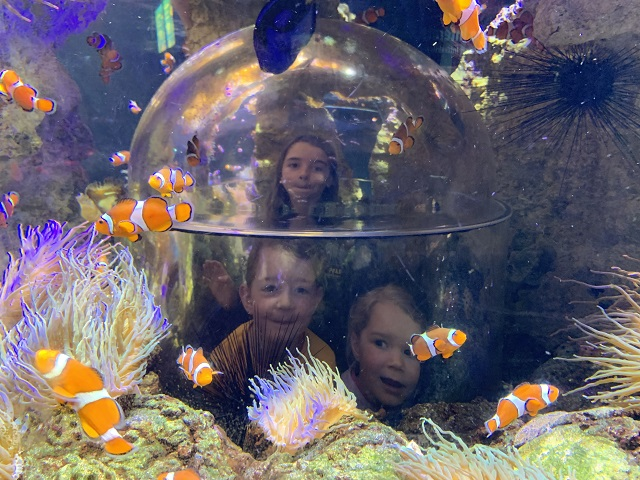
Sealife am Gardasee
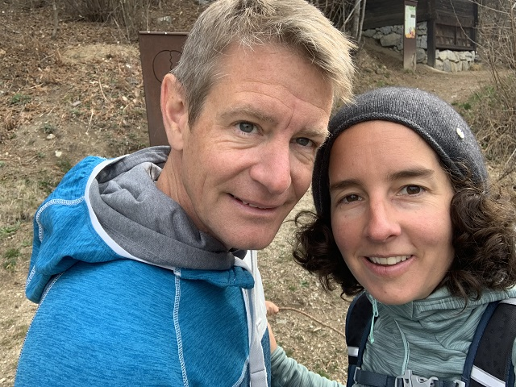
Mal wieder ein Selfie
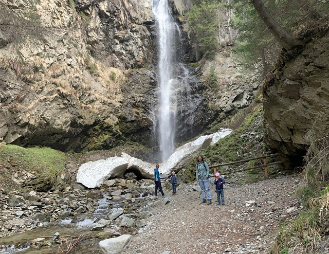
Elfenweg im Pustertal
Rund um die Peleponnes
Weiter ging es rund um die Halbinsel. Endlich konnten wir den Strand geniessen und unsere dicken Jacken im Schrank lassen.
Von Tag zu Tag wurde es wärmer und zwischendurch konnten wir sogar (kurz) baden. Sändelen geht so oder so immer.
Die Schönheit dieser Gegend ist wirklich atemberaubend. Einsame Buchten, kilometerlange Sandstrände, klares Wasser, tausende Oliven-, Orangen- und Zitronenbäume und
super gastfreundliche Menschen machen Griechenland zu einem grandiosen Reiseziel. Da die Campingplätze meist noch geschlossen oder verwaist waren, schliefen wir hauptsächlich auf Stellplätzen. Das brachte uns der Natur noch näher.
Damit wir entschleunigen und einfach mal sein konnten, haben wir einige Ausläufe der Insel ausgelassen. Das tat uns allen sehr gut.
Einmal mussten wir auch wegen schneebedeckten Strassen kurz vor der Passhöhe umdrehen. Zum Glück sind wir heil zurückgekommen und konnten am nächsten Tag über eine andere
Strasse das Gebirge überqueren.
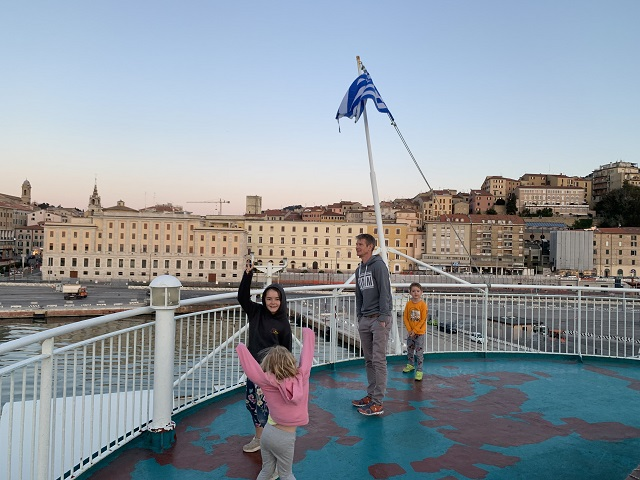
Auf der Fähre
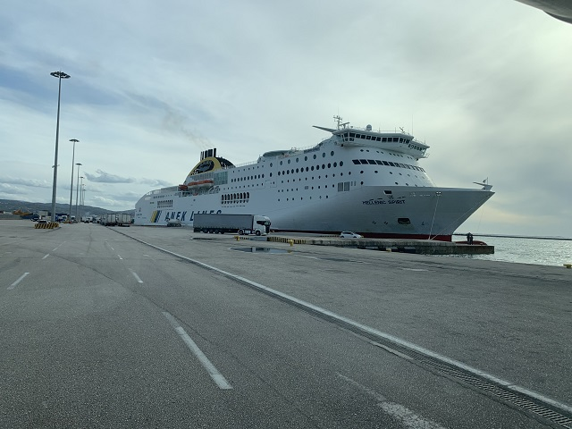
Ab in den Norden
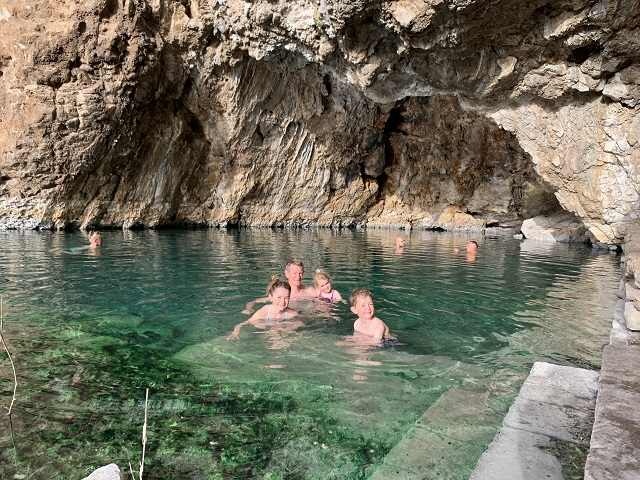
Heisse Quellen
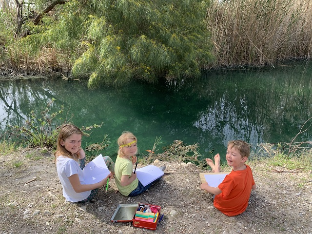
Denker Donnerstag am Fluss
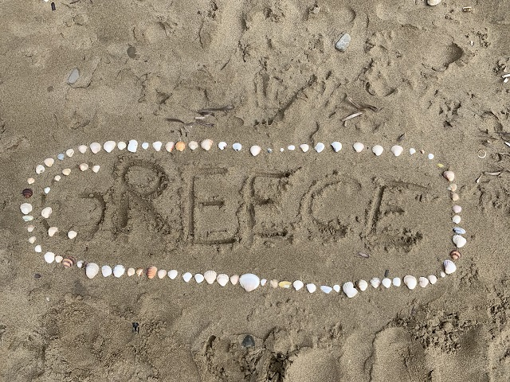
Milenas Strandkunstwerk
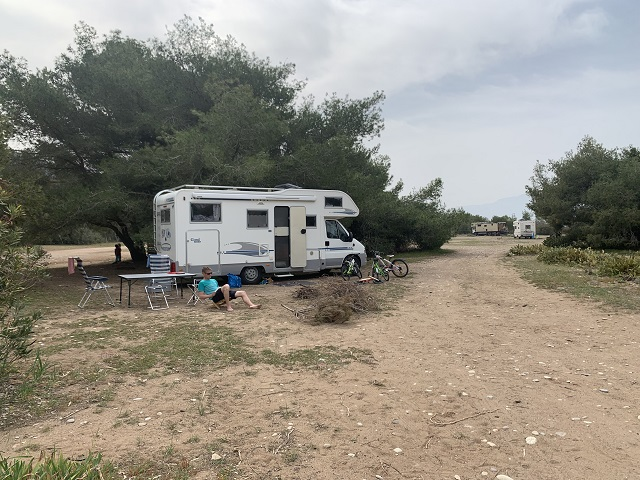
Entspannen
 Geburtstagsparade
Geburtstagsparade
 Sonnenuntergang auf der Terasse
Sonnenuntergang auf der Terasse
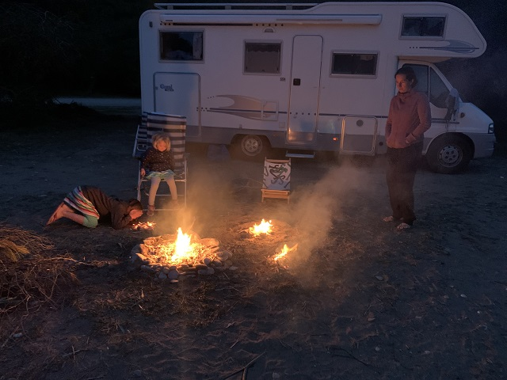
Nur ein Lagerfeuer kann jeder
Unsere letzten Strandtage genossen wir bei Elea Beach und hier haben wir auch Milena's Geburtstag gefeiert.
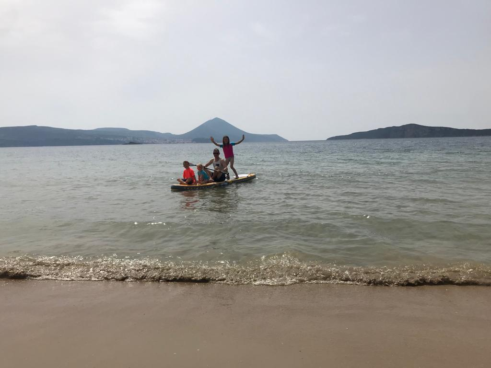
Stand up Paddle
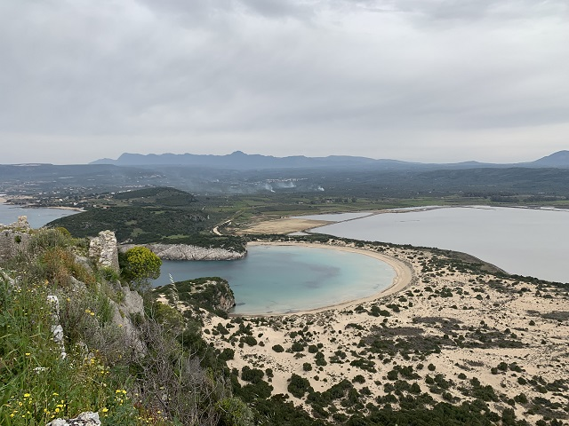
Ochsenbauchbucht
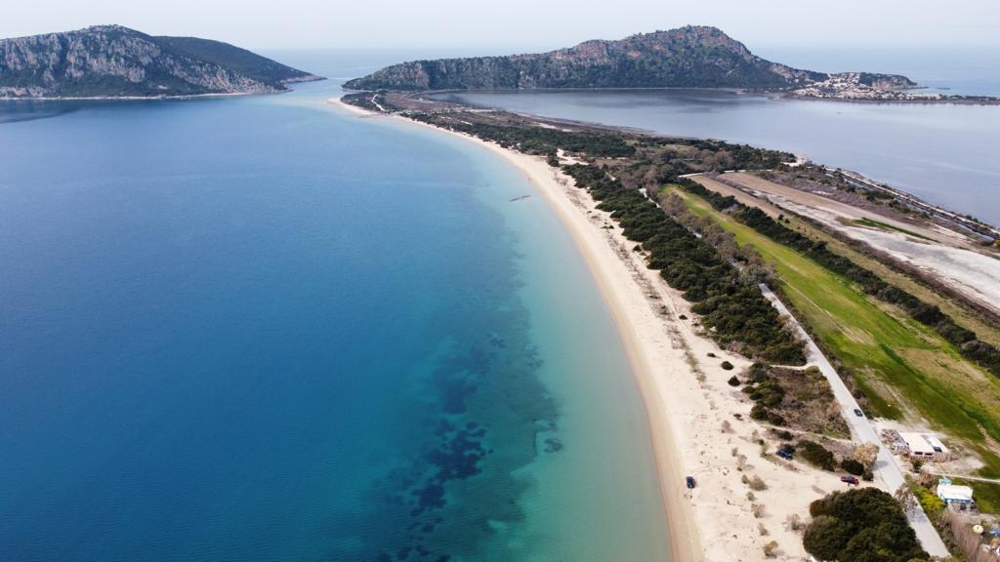
Navarino Bay
Nach einigen Nächten auf einem Stellplatz direkt am Strand mit Spielplatz, Fussballfeld und netten Menschen, sind wir weiter zur Navarino Bay gezogen.
Hier stehen wir fast alleine vor dieser wunderschönen Kulisse und bei perfektem Wetter. Deshalb schnell Stand up Paddle aufblasen und ab ins Wasser.
Die Wanderung hoch zur Burg bot dann diesen atemberaubenden Ausblick auf die Bucht.
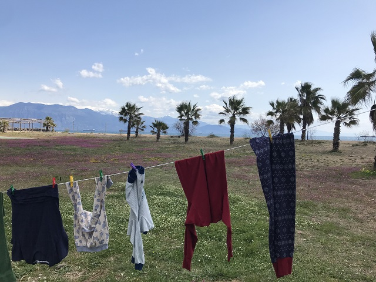
Wäschetag
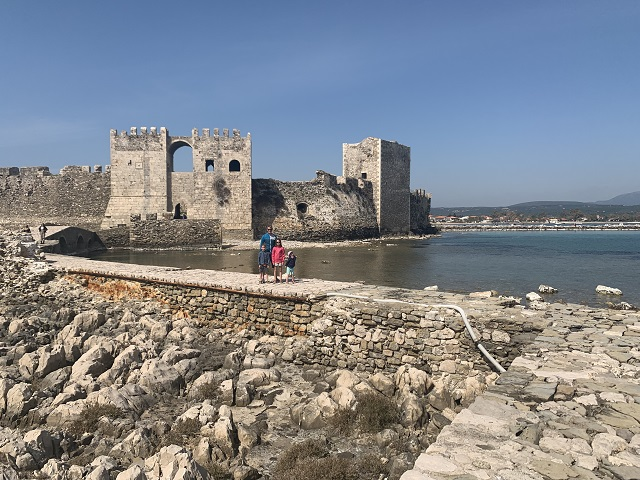
Burg von Methoni
 Aussicht Navarino Burg
Aussicht Navarino Burg
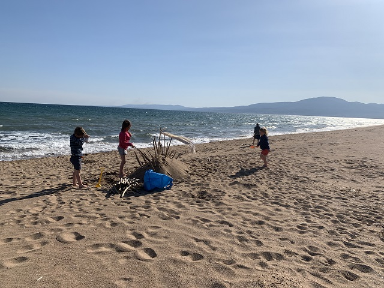
Beach Kids
 Strandauszeit in Messini
Strandauszeit in Messini
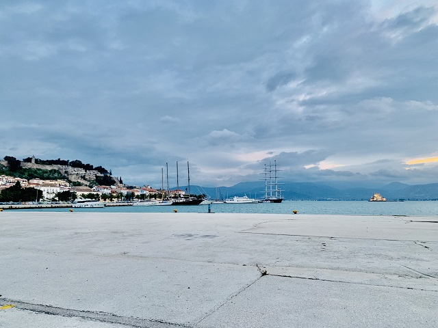
Hübsches Dorf Nafplio
Mittag an der Sonne
Kletterpause
Sändelen vor dem Schlafengehen
Frisch gepresst zum Frühstück
Beeindruckend, Theater Epidauros
Golf von Korinth
Entlang der Küste haben wir den Golf von Korinth erkundigt. Die ersten Tage und Nächte waren sehr kalt.
Die Landschaft und vor Allem die eindrücklichen antiken Bauten konnten wir trotzdem sehr geniessen.